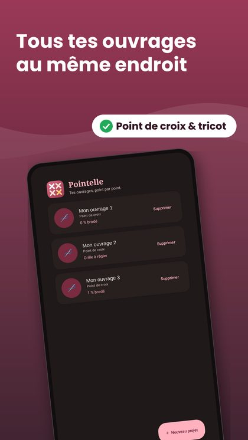
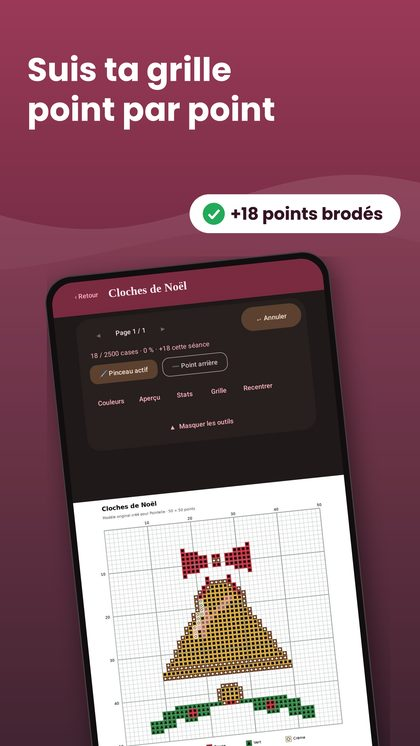
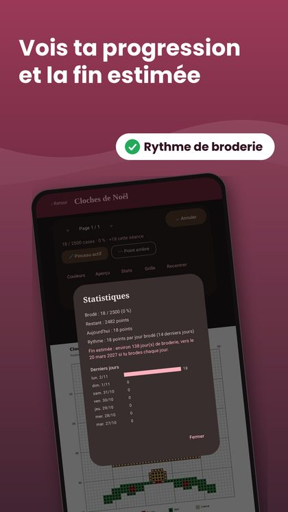

Le carnet de bord de vos ouvrages : point de croix, broderie et tricot, dans une seule appli simple et agréable, payée une fois pour toutes. Pas d'abonnement, pas de publicité, pas de compte.
The logbook for your needlework: cross-stitch, embroidery and knitting in one simple, pleasant app, paid once. No subscription, no ads, no account.
Télécharger sur Google PlayGet it on Google PlayAchat unique, 4,90 € TTC · Android · 6 langues (FR, EN, ES, IT, DE, PT)One-time purchase, €4.90 incl. VAT · Android · 6 languages (FR, EN, ES, IT, DE, PT)



Point de croix
Cross-stitch
Importez votre patron en PDF, en image ou en photo : la grille est repérée automatiquement.
Dessinez aussi votre propre grille avec les fils DMC.
Marquez les cases d'un tap, ou d'un glissement avec le pinceau.
Couleurs reconnues, suivi par couleur, « à acheter », aperçu du rendu final.
Point arrière, statistiques par jour et estimation de fin.
Import your pattern as a PDF, image or photo: the chart is detected automatically.
Or draw your own chart with DMC threads.
Mark cells with a tap, or drag with the brush.
Recognised colours, per-colour tracking, shopping list, preview of the finished piece.
Backstitch, daily statistics and an estimated finish date.
Tricot et crochet
Knitting and crochet
Compteurs de rangs et de mailles, autant que vous voulez, avec de gros boutons faciles à utiliser.
Row and stitch counters, as many as you like, with big easy-to-use buttons.
Et aussi
Also
Stock de fils, guide pour débuter, calculateurs de toile et d'échantillon.
Sauvegarde, et synchronisation facultative via un dossier de votre propre cloud.
Tout reste sur votre téléphone : aucune autorisation demandée.
Thread stash, beginner's guide, fabric and gauge calculators.
Backup, and optional sync through a folder in your own cloud.
Everything stays on your phone: no permissions requested.